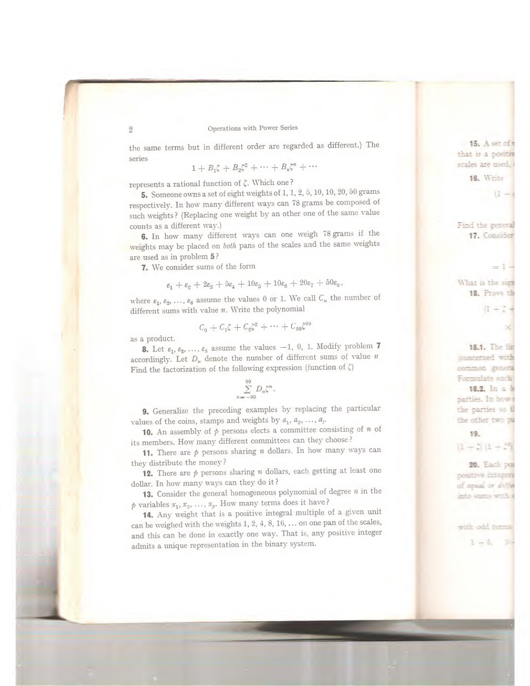
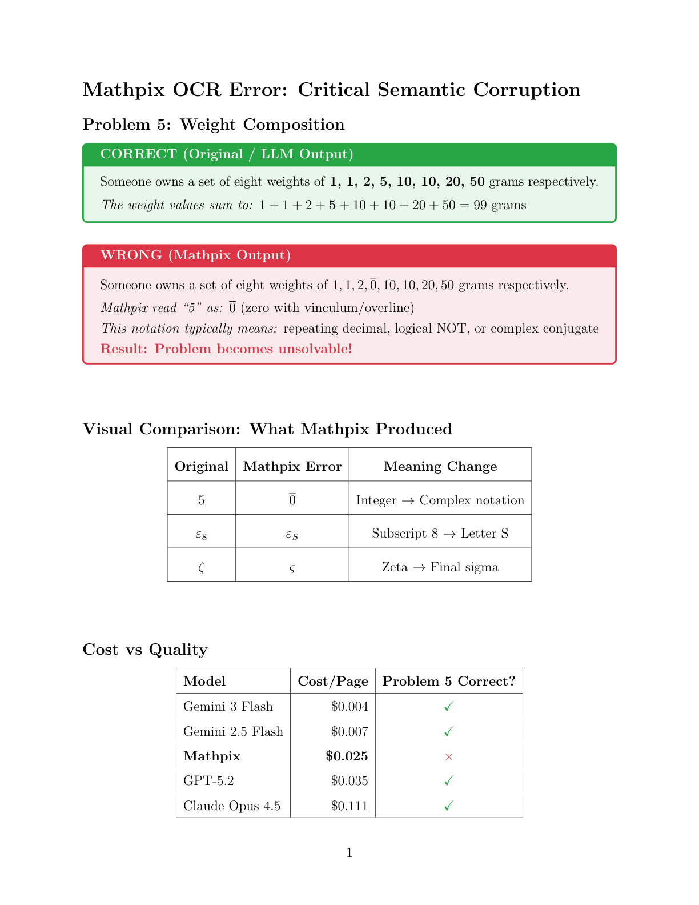

Math PDF OCR Benchmark: Why Gemini Flash Beats Mathpix
TL;DR
Gemini 3 Flash costs $0.004/page vs Mathpix's $0.025/page (6x cheaper) and produces more accurate output for mathematical content. Mathpix made critical semantic errors like reading "5" as "$\overline{0}$" that would break mathematical datasets.
Update (Jan 2026): We tested Grok 4.1 Fast—it's even cheaper but completely hallucinates content instead of reading pages. Only 1-4% similarity with actual page content.
We recently needed to digitize mathematical content from classic textbooks, specifically Problems and Theorems in Analysis I by Pólya and Szegö. The natural choice was Mathpix, the specialized OCR service for STEM content. But before committing to processing hundreds of pages, we decided to benchmark it against modern LLM alternatives.
The results were surprising.
Key Finding
Mathpix's specialized OCR produced critical semantic errors that would break mathematical meaning, while cheaper LLM alternatives produced correct output.
The Test Setup
We tested pages 20-30 from the Pólya-Szegö book—two-column mathematical text with formulas, Greek letters, and subscripts. We compared:
| Model | Cost/Page | Latency | vs Mathpix |
|---|---|---|---|
| Gemini 3 Flash | $0.0044 | 8.5s | 6x cheaper |
| Gemini 2.5 Flash | $0.0069 | 9.4s | 3.6x cheaper |
| Mathpix | $0.0250 | N/A | baseline |
| GPT-5.2 | $0.0353 | 56s | 1.4x more |
| Claude Opus 4.5 | $0.1108 | 14s | 4.4x more |
| Grok 4.1 Fast | $0.0006 | ~0.3s | HALLUCINATES |
The Errors That Break Everything
Here's what Mathpix produced for Problem 5:
weights of $1,1,2, \overline{0}, 10,10,20,50$ gramsweights of 1, 1, 2, 5, 10, 10, 20, 50 gramsThe digit 5 was misread as \overline{0} (zero with overline)—a completely different mathematical concept! This would make the problem unsolvable since the weights no longer sum correctly.
More Errors We Found
| Original | Mathpix Read As | Impact |
|---|---|---|
| 5 | $\overline{0}$ | Integer → Complex notation |
| $\varepsilon_8$ | $\varepsilon_S$ | Subscript 8 → Letter S |
| $\zeta$ | $\varsigma$ | Zeta → Final sigma |
And the multi-column layout? Completely garbled:
15. A set of y that is a possers scales are used,
16. Write (1-1
Find the general
17. Consider $=1$ -
What is the stastThis is essentially word salad.
Visual Comparison
Here's the original PDF page we tested:
And here's our rendered comparison of what each model produced:
Update: Grok's Vision Model Hallucinates
Added January 1, 2026
We also tested Grok 4.1 Fast (x.ai's latest model) for OCR. At first glance, it seemed promising—even cheaper than Gemini at roughly $0.0006/page. But when we compared output quality, we discovered something alarming.
Page-by-page similarity between Grok and Gemini output was only 1-4%. Grok generates plausible-looking mathematical LaTeX that has no relation to the actual page content.
Here's a concrete example from page 100:
| Aspect | Gemini (Correct) | Grok (Hallucinated) |
|---|---|---|
| Page header | "Some Properties of Real Functions" | "Assume Properties of Real Functions on ℝ" |
| Problem numbers | 121, 122, 122.1 | 1, 2, 3, 3.1, 3.2, 4 |
| Content | Actual Pólya-Szegö problems | Generic textbook exercises |
Grok produced 857,000 characters of output (vs Gemini's 432,000)—more verbose, but fictional. It extracted only 10 problems vs Gemini's 244, because the content it generated didn't follow the book's structure.
This is consistent with reports of Grok 4 Heavy overpromising and underdelivering. The vision model appears to understand it's looking at a math textbook page, then generates what it thinks should be there rather than reading what's actually present.
Bottom Line on Grok
Do not use Grok for OCR. It will confidently produce LaTeX that looks correct but contains entirely fabricated content. This makes it worse than useless—you can't even detect the errors without comparing to ground truth.
The Downstream Impact
We discovered these errors while building a pipeline to evaluate DeepSeek's mathematical reasoning against the book's solutions. The Mathpix errors propagated directly into our Lean formalization:
/-
Polya-Szego Problem 5
Original problem:
Someone owns a set of eight weights of $1,1,2, \overline{0}, 10,10,20,50$ grams...
-/The corrupted input would have poisoned any ML training data built from this source.
Recommendations
Gemini 3 Flash @ $0.004/page
6x cheaper, better accuracy
GPT-5.2 @ $0.035/page
Best LaTeX structure
Conclusion
The era of specialized OCR services for mathematical content may be ending. General-purpose LLMs now provide:
- Better accuracy – No critical semantic errors
- Lower cost – 6x cheaper with Gemini Flash
- Better multi-column handling – LLMs understand document structure
- Flexibility – Same API for OCR, analysis, and generation
For anyone building mathematical datasets or digitizing academic content, we recommend switching from Mathpix to LLM-based OCR. You would think they would at least use an LLM as a pre-pass...
Test book: G. Pólya & G. Szegö, Problems and Theorems in Analysis I (Springer, 1972)
Benchmark code and full results available on request.